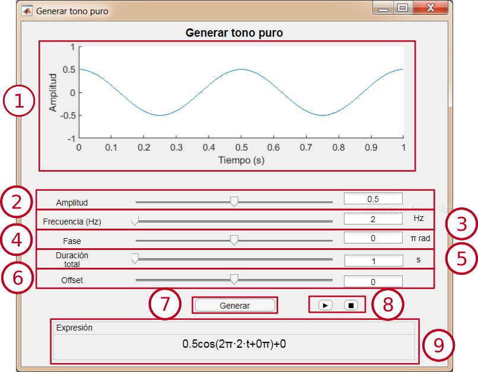
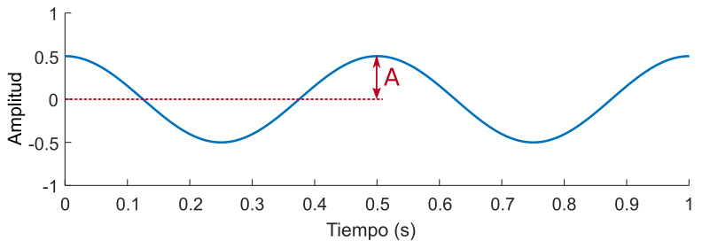
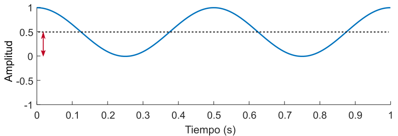

Generar tono puro
Este módulo permite generar un tono puro, con la posibilidad de variar su amplitud, frecuencia, fase y offset.
Interfaz

-
Ventana de previsualización: Permite ver la señal que generará el módulo. Se actualiza al cambiar el valor de algún parámetro.
-
Selector de amplitud: Permite variar la amplitud del coseno entre 0 y 1. El valor se puede cambiar deslizando el cursor o modificando el valor de la caja de texto.
-
Selector de frecuencia: Permite variar la frecuencia del coseno entre 1 y 20000 Hz. El valor se puede cambiar deslizando el cursor o modificando el valor de la caja de texto.
-
Selector de fase: Permite variar la fase del coseno entre −π y π radianes. El valor se puede cambiar deslizando el cursor o modificando el valor de la caja de texto.
-
Selector de duración: Permite variar la duración de la señal entre 1 y 30 segundos. El valor se puede cambiar deslizando el cursor o modificando el valor de la caja de texto.
-
Selector de offset: Permite variar el offset entre -2 y 2. El valor se puede cambiar deslizando el cursor o modificando el valor de la caja de texto.
-
Botón "Generar": Abre una nueva ventana de visualización para observar una señal con los parámetros seleccionados.
-
Botones de reproducción: Permiten reproducir o detener la reproducción de la señal.
-
Expresión: Muestra la expresión matemática de la señal con los parámetros seleccionados. Se actualiza al cambiar el valor de algún parámetro.
Tono puro
Un tono puro es una señal sinusoidal que tiene una única frecuencia. En este módulo se genera utilizando la función coseno, y se expresa mediante la siguiente fórmula:
A cos(2πft + 𝜙) + C,
siendo A la amplitud, f la frecuencia, 𝜙 la fase y C el offset.
-
Amplitud: Valor máximo de la señal.
|

|
|
En este ejemplo la amplitud es 0.5.
|
-
Frecuencia: Número de veces que se repite un ciclo entero de la señal dentro de una unidad de tiempo. Medido en Hercios (Hz) es el número de veces que se repite un ciclo de la señal en 1 segundo.

|
|
En este ejemplo la frecuencia es 2 Hz.
|
-
Fase: Desplazamiento del coseno. Se mide en radianes, siendo 2π radianes un ciclo completo de la señal.

|
|
En este ejemplo la señal está desplazada ¼ de ciclo, por lo que la fase es π/2 rad.
|
-
Offset: Valor constante sumado a la señal.
|  |
| En este ejemplo el offset es 0.5 |